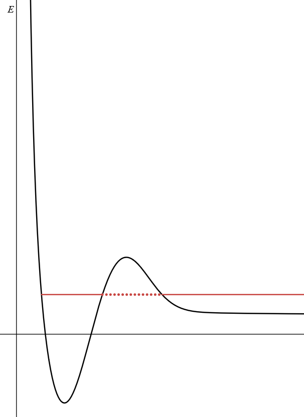
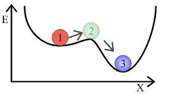
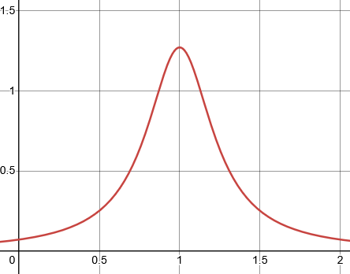
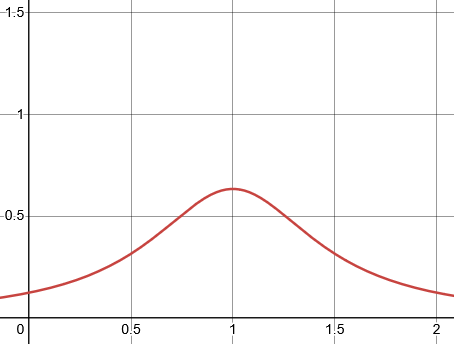
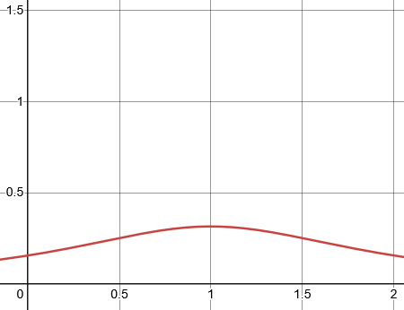

Metastable States
Motivation
In some cases, there is a systen that seems stable, then decays to a lower energy state by releasing energy. For example:- \(A^* \to A + \gamma\): An excited state \(A^*\) transitions to a lower state by releasing one photon.
- \(H_{2p} \to H_{2s} + \gamma_{\hbar\omega}\): An electron in the hydrogen atom at \(n=2\) transitions from \(l=1\) to \(l=0\) by releasing a photon with energy \(\hbar\omega\).
- \(|e\rangle\otimes|0\rangle \to |g\rangle\otimes|1\rangle_\omega\): A particle goes from the excited state to the ground state with a photon of frequency \(\omega\).
Visually, we can think of one such case like this:

where a state that is bound slowly tunnels into the continuum, until nothing is left in the initial bound state.
Fig 1. A plot of \(y=L-Ae^{-\left(x-x_{1}\right)^{2}}+Be^{-\left(x-x_{2}\right)^{2}}+\frac{1}{x^{2}}C\)
It is also helpful (for me) to visualize a case such as:

where a bound state is not necessarily escaping into the continuum, but into a different subspace.
But we focus on a case similar to what is show in Fig 1., where a bound state decays into the continuum.
Fig 2. From the Wikipedia page on metastablity.
Exploring Metastable States
For some Hamiltonian \(\hat H_0\) with a continuum spectrum, we can say that all energies, \(\mathcal E\), greater than or equal to some threshold energy \(\mathcal E_{th}\), are allowed.Say that there is also a discrete eigenstate of the Hamiltonian \(|a\rangle\) that has energy \(\mathcal E_a\), which follows \(\mathcal E_a \gt \mathcal E_{th}\) (though this is not strictly necessary). The eigenstates \(|\mathcal E\rangle\) and \(|a\rangle\) are, of course, orthogonal to each other, and we describe \(\hat H_0\) as follows: \[\begin{align} \hat H_0|\mathcal E\rangle = \mathcal E|\mathcal E\rangle &\text{ and } \hat H_0|a\rangle = \mathcal E_a|a\rangle \\ \mathcal E \gt \mathcal E_{th} &\text{ and } \mathcal E_a \gt \mathcal E_{th} \\ \langle \mathcal E|\mathcal E'\rangle = \delta(\mathcal E-\mathcal E') &\text{ and } \langle a|a\rangle = 1 \\ \langle a|\mathcal E\rangle &= 0 \end{align}\] We want to consider a case where the total Hamiltonian is: \[ \hat H = \hat H_0 + \hat V \] Where we model the total system's Hamiltonian as some model Hamiltonian \(\hat H_0\) plus some perturbation, \(\hat V\). This perturbation is the interaction between states in the two subspaces whcih allows a previously stationary state \(|a\rangle\) to "leak" into the space of continuum states. It vanishes on the bound state \(|a\rangle\) (or you can trivially redefine \(\hat H_0\) to \(\hat H_0 + \langle a | \hat V|a\rangle\) so that it does), and we assume that the perturbation does couple the continuum to itself.
\(\hat V\) thus couples together a bound state \(|a\rangle\) to arbitrary continuum states \(|E\rangle\), and does not couple states in the same subspace together. In summary: \[ \langle a | \hat V|a \rangle = 0, \langle \mathcal E|\hat V|\mathcal E'\rangle = 0, \text{ and } \langle a |\hat V | \mathcal E \rangle \neq 0, \langle \mathcal E |\hat V | a \rangle \neq 0 \] Let's see what happens once this perturbation is introduced.
Dr. Argenti says that since \(|a\rangle\) is degenerate with the continuum, we expect that upon interaction, we obtain a wave packet/superposition of states in the continuum, that decays as \(|a\rangle\) slowly escapes into the continuum. I was not expecting anything, actually, so I don't know why that is, but I trust him. This intuition is not necessary as we will demonstrate it right now, but I guess it's nice to be one of the cognoscenti.
Anyway, we want to describe the eigenstates of the system that arise after \(|a\rangle\) interacts with the continuum, i.e. the eigenstates of the true Hamiltonian \(\hat H = \hat H_0 + \hat V\) (which are all in the continuum). Thus we want to solve the following equation: \[\hat H|\Psi_E\rangle = E|\Psi_E\rangle\] where we can write the eigenstate \(|\Psi_E\rangle\) as a linear combination of the original continuum eigenstates and \(|a\rangle\): \[ |\Psi_E\rangle = |a\rangle b_E + \int^\infty_{E_{th}} d\mathcal E|\mathcal E\rangle c_{\mathcal E, E} \] To solve this equation we project the following onto \(|a\rangle\) and \(|\mathcal E^{'}\rangle\): \[\begin{align} \hat H|\Psi_E\rangle &= E|\Psi_E\rangle \\ (E-\hat H)|\Psi_E\rangle &= 0 \end{align}\] to obtain the system of equations: \[ \begin{cases} \langle a | E - \hat H | \Psi_E\rangle = 0 & \\ \langle\mathcal E^{'}|E-\hat H|\Psi_E\rangle = 0, & \forall |\mathcal E^{'}\rangle\\ \end{cases} \] which we begin to solve by plugging in for \(\hat H\) and \(|\Psi_E\rangle\): \[ \begin{cases} \langle a | E - \hat H_0 - \hat V \left\{ |a\rangle b_E + \int^\infty_{E_{th}} d\mathcal E|\mathcal E\rangle c_{\mathcal E, E} \right\} = 0 \\ \langle\mathcal E^{'}|E-\hat H_0 - \hat V \left\{ |a\rangle b_E + \int^\infty_{E_{th}} d\mathcal E|\mathcal E\rangle c_{\mathcal E, E} \right\} = 0\\ \end{cases} \] Because we know which elements of \(\hat V\) are zero, and because \(\langle a | a \rangle = 1\) and \(\langle \mathcal E^{'} | a \rangle = 0\), we can simplify this to: \[ \begin{align} &\begin{cases} \langle a | E - \hat H_0 - \hat V \left\{ |a\rangle b_E + \int^\infty_{E_{th}} d\mathcal E|\mathcal E\rangle c_{\mathcal E, E} \right\} = 0 \\ \langle\mathcal E^{'}|E-\hat H_0 - \hat V \left\{ |a\rangle b_E + \int^\infty_{E_{th}} d\mathcal E|\mathcal E\rangle c_{\mathcal E, E} \right\} = 0\\ \end{cases} \\ &= \begin{cases} \langle a | E - \hat H_0 |a\rangle b_E - \langle a| \hat V |a\rangle b_E + \left\{ \int^\infty_{E_{th}} d\mathcal E\langle a | E - \hat H_0 - \hat V |\mathcal E\rangle c_{\mathcal E, E} \right\} = 0 \\ \langle\mathcal E^{'}|E-\hat H_0 |a\rangle b_E - \langle\mathcal E^{'}|\hat V |a\rangle b_E + \left\{ \int^\infty_{E_{th}} d\mathcal E \langle\mathcal E^{'}|E-\hat H_0 - \hat V |\mathcal E\rangle c_{\mathcal E, E} \right\} = 0\\ \end{cases} \\ &= \begin{cases} (E-\mathcal E_a)\langle a|a\rangle b_E - 0 + \left\{ \int^\infty_{E_{th}} d\mathcal E(E-\mathcal E_a)\langle a |\mathcal E\rangle c_{\mathcal E, E} - \langle a| \hat V |\mathcal E\rangle c_{\mathcal E, E} \right\} = 0 \\ (E-\mathcal E^{'})\langle\mathcal E^{'}|a\rangle b_E - \langle\mathcal E^{'}|\hat V |a\rangle b_E + \left\{ \int^\infty_{E_{th}} d\mathcal E (E-\mathcal E^{'})\langle\mathcal E^{'}|\mathcal E\rangle c_{\mathcal E, E} - \langle\mathcal E^{'}| \hat V |\mathcal E\rangle c_{\mathcal E, E} \right\} = 0\\ \end{cases} \\ &= \begin{cases} (E-\mathcal E_a) b_E + \left\{ \int^\infty_{E_{th}} d\mathcal E \left( 0 -\langle a| \hat V |\mathcal E\rangle c_{\mathcal E, E}\right ) \right\} = 0 \\ 0 - \langle\mathcal E^{'}|\hat V |a\rangle b_E + \left\{ \int^\infty_{E_{th}} d\mathcal E (E-\mathcal E^{'})\delta(\mathcal E^{'} - \mathcal E)c_{\mathcal E, E} - 0 \right\} = 0\\ \end{cases} \\ &= \begin{cases} (E-\mathcal E_a) b_E - \int^\infty_{E_{th}} d\mathcal E \langle a| \hat V |\mathcal E\rangle c_{\mathcal E, E} = 0 \\ -\langle\mathcal E^{'}|\hat V |a\rangle b_E + \left\{ \int^\infty_{E_{th}} d\mathcal E (E-\mathcal E^{'})\delta(\mathcal E^{'} - \mathcal E)c_{\mathcal E, E} \right\} = 0\\ \end{cases} \\ &= \begin{cases} (E-\mathcal E_a) b_E - \int^\infty_{E_{th}} d\mathcal E \langle a| \hat V |\mathcal E\rangle c_{\mathcal E, E} = 0 \\ -\langle\mathcal E^{'}|\hat V |a\rangle b_E + (E-\mathcal E^{'}) c_{\mathcal E^{'}, E} = 0\\ \end{cases} \end{align} \] To be more concise we say \(\langle i|\hat V | j\rangle = V_{ij}\) and so our final system of equations is: \[ \begin{cases} (E-\mathcal E_a) b_E - \int^\infty_{E_{th}} d\mathcal E V_{a\mathcal E}\cdot c_{\mathcal E, E} = 0 \\ -V_{\mathcal E^{'} a} b_E + (E-\mathcal E^{'}) c_{\mathcal E^{'}, E} = 0\\ \end{cases} \] Note that our second equation in this system is actually an infinite number of equations, for all possible values of \(\mathcal E^{'}\) (of which there are an infinite amount).
Finding the value of \(c_{\mathcal E^{'}, E}\). Let's work on solving the second equation in our system first, and rearrange a little to get: \[ V_{\mathcal E^{'} a} b_E = (E-\mathcal E^{'}) c_{\mathcal E^{'}, E} \] This is what we're working wtih:
- The value of \(V_{\mathcal E^{'} a} b_E\) is a given in this problem.
- \(E\) is a parameter of this problem-- we want to find \(|\Psi_E\rangle\) for all possible \(E\)'s, and in this case, since it is in the continuum, \(E\) is any value greater than \(\mathcal E_{th}\). Thus we technically "know" \(E\) already.
- \(\mathcal E^{'}\) is, as we mentioned earlier, a variable in this problem; we also want to know the solution to this equation for all possible \(\mathcal E^{'}\)'s'.
First, \(c_{\mathcal E^{'}, E}\) cannot just be proportional to \(b_E\). If we substituted this into the first equation in our system of equations, the integrand would simply be the product of two scalar quantities, which means that the total integral would be linear in \(\mathcal E\), and we would get the trivial solution that \(b_E = c_{\mathcal E, E} = 0\)
Second, in the case that we have 0 interaction where all \(V=0\), \(|a\rangle\) will never enter the continuum, and so our continuum states are exactly what they were originally, \(|\mathcal E\rangle\). This means that \(|\Psi_E\rangle = |\mathcal E\rangle\) and that: \[\begin{align} V_{\mathcal E^{'} a} b_E &= (E-\mathcal E^{'}) c_{\mathcal E^{'}, E} \\ 0 &= (E-\mathcal E^{'}) c_{\mathcal E^{'}, E} \\ \text{if } E \neq \mathcal E^{'} &: E-\mathcal E^{'} \neq 0 \implies c_{\mathcal E^{'}, E} = 0 \\ \text{if } E = \mathcal E^{'} &: E-\mathcal E^{'} = 0 \implies c_{\mathcal E^{'}, E} = \text{ anything, e.g. 1} \\ \therefore c_{\mathcal E^{'}, E} &= \delta(E - \mathcal E^{'}) \end{align}\] meaning our solution must include \(c_{\mathcal E^{'}, E} = \delta(E - \mathcal E^{'})\) when all \(V=0\).
These two restrictions mean that our solution to \(c_{\mathcal E^{'}, E}\) must follow the form: \[ c_{\mathcal E^{'}, E} = ? + N\delta(E - \mathcal E^{'}) \] where \(?\) is 0 when all \(V=0\), meaning that \(?\) must be linear in elements of \(V\).
It turns out that in order to solve this problem while following this form, we use an existing closed form solution to the general equation \(xf(x) = g(x)\). For our purposes, \(f(x)\) is our \(c_{\mathcal E^{'}, E}\) and \(g(x)\) is our \(V_{\mathcal E^{'} a} b_E\).
The solution to this general equation is \(f(x) = f_p(x) + N\delta(x)\), which is just what we want. In this case, \(f_p(x)\) is called a particular solution, and we can work out what it is as follows:
When the delta term is 0, we still want \(f(x)\) to be well defined under integration, so \(f_p(x)\) must be well defined under integration. Intuitively, we can see that if \(xf(x) = g(x)\), then \(f(x) = g(x)/x\). This fits nicely with our condition that \(?\) must be linear in elements of \(V\), since \(g(x)\) is linear in elements of \(V\).
However, this is only defined when \(x \neq 0\). We instead say that \(f_p(x)\) must be \(\frac{g(x)}{x + i\lambda}\) as we take the limit as \(\lambda\to 0^+\). Oftentimes this is written as \(\frac{g(x)}{x + i0^+}\), so the closed form solution is: \[ f(x) = \frac{g(x)}{x + i0^+} + N\delta(x) \] Also note that the following is true: \[ \frac{1}{x + i0^+} = \frac{\mathcal P}{x} - i\pi\delta(x) \tag{1} \] where \(\frac{\mathcal P}{x}\) is apparently the Cauchy principal value of \(x\).
Applying the closed form solution to our original problem gives us: \[ c_{\mathcal E^{'}, E} = \frac{V_{\mathcal E^{'} a} b_E}{(E - \mathcal E^{'}) + i0^+} + N\delta(E - \mathcal E^{'}) \] where if \(N=1\), \(\langle \Psi_E | \Psi_E^{'}\rangle = \delta(E - \mathcal E^{'})\) (he does this in his notes, but we did not go through it in class). Note that we don't apply (1) here, and to be honest, I have no idea what (1) means... you don't really need to know what it means when we use it later...
Finding the value of \(b_E\). Now that our second equation in our system of equations is solved, we can find \(b_E\) by plugging in \(\frac{V_{\mathcal E a} b_E}{(E - \mathcal E) + i0^+} + \delta(E - \mathcal E)\) for \(c_{\mathcal E, E}\) in our first equation. \[\begin{align} (E-\mathcal E_a) b_E - \int^\infty_{E_{th}} d\mathcal E V_{a\mathcal E} \cdot c_{\mathcal E, E} &= 0 \\ (E-\mathcal E_a) b_E - \int^\infty_{E_{th}} d\mathcal E V_{a\mathcal E} \left(\frac{V_{\mathcal E a} b_E}{(E - \mathcal E) + i0^+} + \delta(E - \mathcal E) \right) &= 0 \\ (E-\mathcal E_a) b_E - \int^\infty_{E_{th}} d\mathcal E V_{a\mathcal E} \frac{V_{\mathcal E a} b_E}{(E - \mathcal E) + i0^+} - \int^\infty_{E_{th}} d\mathcal E V_{a\mathcal E} \delta(E - \mathcal E) &= 0 \\ (E-\mathcal E_a) b_E - \int^\infty_{E_{th}} d\mathcal E V_{a\mathcal E} \frac{V_{\mathcal E a} b_E}{(E - \mathcal E) + i0^+} - V_{aE} &= 0 \\ (E-\mathcal E_a) b_E - \int^\infty_{E_{th}} d\mathcal E \frac{|V_{a \mathcal E }|^2 b_E}{(E - \mathcal E) + i0^+} &= V_{aE} \\ \end{align}\] At this point, we plug in (1): \[\begin{align} (E-\mathcal E_a) b_E - \int^\infty_{E_{th}} d\mathcal E \frac{|V_{a \mathcal E }|^2 b_E}{(E - \mathcal E) + i0^+} &= V_{aE} \\ (E-\mathcal E_a) b_E - \int^\infty_{E_{th}} d\mathcal E |V_{a \mathcal E }|^2 b_E \left(\frac{\mathcal P}{E - \mathcal E} - i\pi\delta(E - \mathcal E)\right ) &= V_{aE} \\ b_E \left ( E-\mathcal E_a - \int^\infty_{E_{th}} d\mathcal E \frac{|V_{a \mathcal E }|^2\mathcal P}{E - \mathcal E} + i\pi\int^\infty_{E_{th}} d\mathcal E \delta(E - \mathcal E)|V_{a \mathcal E }|^2\right ) &= V_{aE} \\ b_E \left ( E-\mathcal E_a - \int^\infty_{E_{th}} d\mathcal E \frac{|V_{a \mathcal E }|^2\mathcal P}{E - \mathcal E} + i\pi |V_{aE}|^2\right ) &= V_{aE} \\ b_E \left ( E - \left\{ \mathcal E_a + \int^\infty_{E_{th}} d\mathcal E \frac{|V_{a \mathcal E }|^2\mathcal P}{E - \mathcal E} - i\pi |V_{aE}|^2 \right \} \right ) &= V_{aE} \\ \end{align}\] Instead of toiling over this any longer, it turns out we just define the following: \[\begin{align} \Delta_a(E) &= \int^\infty_{E_{th}} d\mathcal E \frac{|V_{a \mathcal E }|^2\mathcal P}{E - \mathcal E} \\ \Gamma_a(E) &= 2\pi|V_{aE}|^2 \end{align}\] You may notice that \(\Delta_a(E)\) looks very similar to a second order energy correction from our discussion on time-independent perturbation theory, and indeed, we use this to define \[\overline{E_a(E)} = \mathcal E_a + \Delta_a(E)\] so that we have: \[\begin{align} b_E \left ( E - \left\{ \mathcal E_a + \Delta_a(E) - \frac{i}{2}\Gamma_a(E) \right \} \right ) &= V_{aE} \\ b_E \left ( E - \left\{ \overline{E_a(E)} - \frac{i}{2}\Gamma_a(E) \right \} \right ) &= V_{aE} \\ \end{align}\] We go even further by defining \[ \tilde E_a(E) = \overline{E_a(E)} - \frac{i}{2}\Gamma_a(E) \] so that we finally obtain: \[\begin{align} b_E \left ( E - \left\{ \overline{E_a(E)} - \frac{i}{2}\Gamma_a(E) \right \} \right ) &= V_{aE} \\ b_E \left ( E - \tilde E_a(E) \right ) &= V_{aE} \\ b_E &= \frac{V_{aE}}{E - \tilde E_a(E)} \end{align}\] (the significance of \(\tilde E_a\) and \(\bar E_a\) will be discussed a little later).
Finally finding the solution for \(|\Psi_E\rangle\). We can now solve for \(|\Psi_E\rangle\), which, as a reminder, we can represent as the following linear combination of states: \[ |\Psi_E\rangle = |a\rangle b_E + \int^\infty_{E_{th}} d\mathcal E|\mathcal E\rangle c_{\mathcal E, E} \] Our solution for \(b_E\) is: \[ b_E = \frac{V_{aE}}{E - \tilde E_a(E)} \] Our solution for \(c_{\mathcal E^, E}\) is: \[ c_{\mathcal E, E} = \frac{V_{\mathcal E a} b_E}{(E - \mathcal E) + i0^+} + \delta(E - \mathcal E) \] or, using our new expression for \(b_E\): \[ c_{\mathcal E, E} = \frac{V_{\mathcal E a}}{(E - \mathcal E) + i0^+}\cdot\frac{V_{aE}}{E - \tilde E_a(E)} + \delta(E - \mathcal E) \] plugging these into \(|\Psi_E\rangle\): \[\begin{align} |\Psi_E\rangle &= |a\rangle b_E + \int^\infty_{E_{th}} d\mathcal E|\mathcal E\rangle c_{\mathcal E, E} \\ |\Psi_E\rangle &= |a\rangle \left ( \frac{V_{aE}}{E - \tilde E_a(E)} \right ) + \int^\infty_{E_{th}} d\mathcal E|\mathcal E\rangle \frac{V_{\mathcal E a}}{(E - \mathcal E) + i0^+}\cdot \frac{V_{aE}}{E - \tilde E_a(E)} + \delta(E - \mathcal E) \\ |\Psi_E\rangle &= |a\rangle \left ( \frac{V_{aE}}{E - \tilde E_a(E)} \right ) + \int^\infty_{E_{th}} d\mathcal E|\mathcal E\rangle \frac{V_{\mathcal E a}}{(E - \mathcal E) + i0^+}\cdot \frac{V_{aE}}{E - \tilde E_a(E)} + \int^\infty_{E_{th}} d\mathcal E|\mathcal E\rangle \delta(E - \mathcal E) \\ |\Psi_E\rangle &= \frac{V_{aE}}{E - \tilde E_a(E)} \left ( |a\rangle + \int^\infty_{E_{th}} d\mathcal E|\mathcal E\rangle \frac{V_{\mathcal E a}}{(E - \mathcal E) + i0^+}\right ) + |E\rangle \\ \end{align}\] where we can think of \(\frac{V_{aE}}{E - \tilde E_a(E)} \left ( |a\rangle + \int^\infty_{E_{th}} d\mathcal E|\mathcal E\rangle \frac{V_{\mathcal E a}}{(E - \mathcal E) + i0^+}\right )\) as a correction to \(|E\rangle\). We've thus finally found an expression for the state that results from \(|a\rangle\) entering the continuum.
The Energy Distribution of \(|a\rangle\)
Given that \(|\Psi_E\rangle\) are eigenstates of the true Hamiltonian, we can write: \[ |a\rangle = \int dE |\Psi_E\rangle\langle\Psi_E|a\rangle \] (which we can also think of as inserting the resolution of identity into \(|a\rangle\)) where \(\langle\Psi_E|a\rangle\) are coefficients used in the linear combination of states \(|\Psi_E\rangle\) that describe \(|a\rangle\). In other words, they describe the contribution of each continuum state of the true Hamiltonian to \(|a\rangle\).For simplicity's sake, we calculate \(\langle a | \Psi_E\rangle\) instead, which tells us the overlap of an arbitrary \(|\Psi_E\rangle\) with \(|a\rangle\). Recalling that \(\langle a | \mathcal E\rangle = 0\), it's simple to see from our solution for \(|\Psi_E\rangle\) that: \[ \langle a | \Psi_E\rangle = \frac{V_{aE}}{E - \tilde E_a(E)} \] This is a complex value, as \(\tilde E_a(E) = \mathcal E_a + \Delta_a(E) - \frac{i}{2}\Gamma_a(E)\) is complex (remember that \(\Delta_a\) and \(\Gamma_a\) are real), but its square modulus is: \[ |\langle a | \Psi_E\rangle|^2 = \frac{|V_{aE}|^2}{(E - \tilde E_a(E))(E - \tilde E^*_a(E))} \] Using the definitions that we saw earlier: \[\tilde E_a(E) = \overline{E_a(E)} - \frac{i}{2}\Gamma_a(E)\] and \[\Gamma_a(E) = 2\pi|V_{aE}|^2\] we can rewrite the squared modulus as: \[\begin{align} |\langle a | \Psi_E\rangle|^2 &= \frac{|V_{aE}|^2}{(E - \tilde E_a(E))(E - \tilde E^*_a(E))} \\ &= \frac{|V_{aE}|^2}{(E - \overline{E_a(E)} - \frac{i}{2}\Gamma_a(E))(E - \overline{E_a(E)} + \frac{i}{2}\Gamma_a(E))} \\ &= \frac{|V_{aE}|^2}{(E - \overline{E_a(E)} - \frac{i}{2}\Gamma_a(E))(E - \overline{E_a(E)} + \frac{i}{2}\Gamma_a(E))} \\ &= \frac{|V_{aE}|^2}{(E - \overline{E_a(E)})^2 - (\frac{i}{2}\Gamma_a(E))^2} = \frac{|V_{aE}|^2}{(E - \overline{E_a(E)})^2 + \frac{1}{4}\Gamma^2_a(E)} \\ &= \frac{1}{\pi}\frac{\pi|V_{aE}|^2}{(E - \overline{E_a(E)})^2 + \frac{1}{4}\Gamma^2_a(E)} = \frac{1}{\pi}\frac{\Gamma_a(E) / 2}{(E - \overline{E_a(E)})^2 + \frac{1}{4}\Gamma^2_a(E)} \\ &= \frac{1}{\pi}\frac{\Gamma_a(E) / 2}{(E - \overline{E_a(E)})^2 + \frac{1}{4}\Gamma^2_a(E)} \frac{4/\Gamma_a^2(E)}{4/\Gamma_a^2(E)} \\ &= \frac{4}{\pi\Gamma^2_a(E)} \frac{\Gamma_a(E) / 2}{(\frac{2(E - \overline{E_a(E)})}{\Gamma_a(E)})^2 + 1} = \frac{4}{\pi\Gamma^2_a(E)} \frac{\Gamma_a(E) / 2}{(\frac{E - \overline{E_a(E)}}{\Gamma_a(E)/2})^2 + 1} \\ &= \frac{2}{\pi\Gamma_a(E)}\frac{1}{(\frac{E - \overline{E_a(E)}}{\Gamma_a(E)/2})^2 + 1} \end{align}\] This follows the form of a Lorentzian, and looks something like this:

Rough plot of \(|\langle a | \Psi_E\rangle |^2\) for \(\Gamma_a(E) = 0.5\) and \(\overline{E_a(E)} = 1\)

Rough plot of \(|\langle a | \Psi_E\rangle |^2\) for \(\Gamma_a(E) = 1\) and \(\overline{E_a(E)} = 1\)

Rough plot of \(|\langle a | \Psi_E\rangle |^2\) for \(\Gamma_a(E) = 2\) and \(\overline{E_a(E)} = 1\)
Of course, \(|\langle a | \Psi_E\rangle |^2\) is the same as \(|\langle \Psi_E | a \rangle |^2\), so these plots show us the both the contribution of each \(|\Psi_E\rangle\) to \(|a\rangle\) and the overlap of an arbitrary \(|\Psi_E\rangle\) with \(|a\rangle\) (they're equivalent quantities).
So we see that a \(|\Psi_E\rangle\) more strongly contributes to replicating \(|a\rangle\) in a given metastable state-- a.k.a. overlaps more with \(|a\rangle\)-- IF its energy \(E\) is closer to \(\overline{E_a}\), where this condition of "closeness" is controlled by \(\Gamma_a\). In other words, \(\Gamma_a\) controls the distribution of energies in the metastable state.
Or, to paraphrase Dr. Argenti, we see that the state \(|a\rangle\) is diluted into the continuum across an energy range of the order \(\Gamma_a(E)\), which is also called the "resonance width", around some central energy which is equal to a shifted version of \(E_a\), which we call \(\overline{E_a(E)}\).